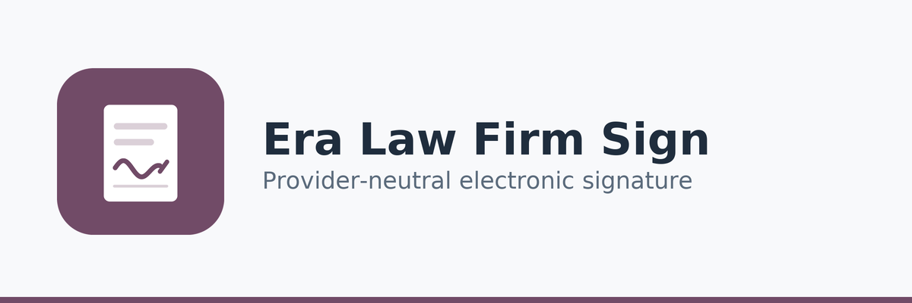

A signature workflow is only as sound as the message that reports it. This extension freezes the document before dispatch and verifies every callback cryptographically, so a forged, replayed or stale confirmation cannot mark a document signed.
لا يصحّ مسار التوقيع أكثر من صحة الرسالة التي تُبلّغ به. تجمّد هذه الإضافة المستند قبل الإرسال وتتحقق من كل استجابة تشفيريًا، فلا تستطيع رسالة مزوّرة أو معادة أو منتهية أن تجعل مستندًا موقّعًا.
The document is hashed when the request is prepared. If the file changes afterwards, sending is refused rather than silently signing a different text.
تُحسب بصمة المستند عند تجهيز الطلب، وإذا تغيّر الملف بعدها يُرفض الإرسال بدل التوقيع الصامت على نص مختلف.
Callbacks are authenticated by HMAC over a timestamped payload inside a tolerance window, and matched against a per-request nonce.
تُوثَّق الاستجابات بـ HMAC على حمولة مختومة زمنيًا ضمن نافذة سماح، وتُطابق مع رمز عشوائي خاص بكل طلب.
Each callback carries an event key recorded once and only once. Re-delivering the same event changes nothing and raises no error.
تحمل كل استجابة مفتاح حدث يُسجَّل مرة واحدة فقط، وإعادة إرسال الحدث نفسه لا تغيّر شيئًا ولا تُنتج خطأ.
A mock provider for testing and an HTTP provider for real integrations, with per-provider timeout, retry limit and callback tolerance.
مزوّد وهمي للاختبار وآخر عبر HTTP للتكامل الفعلي، مع مهلة وحد إعادة محاولة ونافذة سماح لكل مزوّد.
An optional extension of Era Saudi Law Firm Management. Provider-neutral by design — no signature vendor is assumed or bundled, and every dispatch, failure and callback is kept as a record that cannot be edited.
إضافة اختيارية لنظام إدارة مكاتب المحاماة السعودية، محايدة تجاه المزوّد بحكم التصميم — دون افتراض أو تضمين أي مزوّد، وكل إرسال وفشل واستجابة يُحفظ سجلاً لا يقبل التعديل.
Era Group · https://era.net.sa · License: LGPL-3